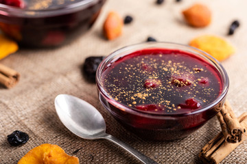

Milky Maize Pudding

Description
It is prepared with purple corn, an ingredient of Peruvian origin, with which the famous chicha morada is also prepared. A highly prepared dessert in Peruvian homes and a must at all gastronomic fairs.
Ingredients
- 1/2 kilo of purple corn
- 1 kilo of sugar
- 10 tablespoons of chuño flour (cornstarch or sweet potato flour)
- 2 lemons
- 1 apple
- 1 quince
- pineapple
- 2 peaches or peaches
- 1/2 cup of cherries
- 1/2 cup of guesillo (dried peach)
- 1/2 cup of chillies (optional)
- 6 dried apricots
- Whole cinnamon, ground cinnamon and cloves
Steps
- Put the purple corn, previously washed and partly shelled, to cook in a pot. When it is well cooked, strain the liquid through a fine strainer and then add more water until it reaches three liters. Then it is strained again and the liquid is put on the fire.
- Add the sugar, the cloves, the whole cinnamon (one or two sticks), the pineapple, the quinces, the buts, the peaches, the chopped dried apricots; the guinditas, the huesillos, and guindones well washed.
- Let it cook well and then add the chuño diluted in a little cold water or cornstarch or, if better, sweet potato flour. Once the lemon juice is about to be poured and let it boil again without stopping to move, it is easy to recognize when the sweet is ready since at that moment you can see the bottom of the pot when it is moving.
- Finalmente esperamos que este delicioso postre se enfríe, se vacía en dulceras y se sirve espolvoreado con canela molida.
regresar..